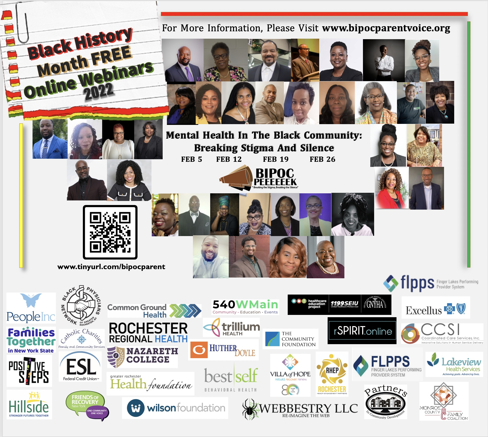
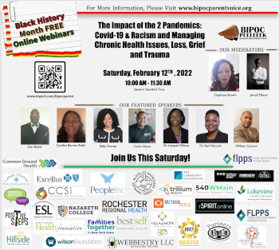

Community Calendar
February 2022
- AMD/Low Vision Awareness Month with the National Eye Institute
- American Heart Month with the National Heart, Lung, and Blood Institute(NHLBI)
- International Prenatal Infection Prevention Month with organizations like the WIC Works Resource System and National Association of County and City Health Officials
- National Cancer Prevention Month with the American Institute for Cancer Research
- National Children’s Dental Health Month with the American Dental Association
- African Heritage and Health Week (Feb. 1–7) with Old Ways Cultural Food Traditions
- World Cancer Day (Feb. 4) with the Union for International Cancer Control
- National “Wear Red” Day for women’s heart health (Feb. 5) with the American Heart Association
- Give Kids a Smile Day (Feb. 5) with the American Dental Association
- National Black HIV/AIDS Awareness Day (Feb. 7) with the Minority HIV/AIDS Fund
- Congenital Heart Defect Awareness Week (Feb. 7–14) with Mended Hearts
- National Donor Day (Feb. 14) with Donate Life America and Donor Alliance
- Heart Failure Awareness Week (Feb. 14–20) with the Heart Failure Society of America
- National Eating Disorders Awareness Week (Feb. 22–28) with the National Eating Disorders Association
- National Heart Valve Disease Awareness Day (Feb. 22) with the Alliance for Aging Research
- Rare Disease Day 2021 (Feb. 28) with multiple organizations

